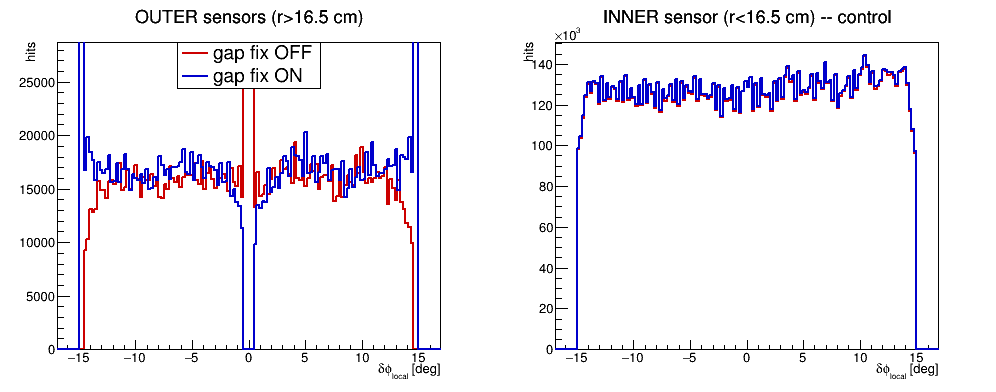
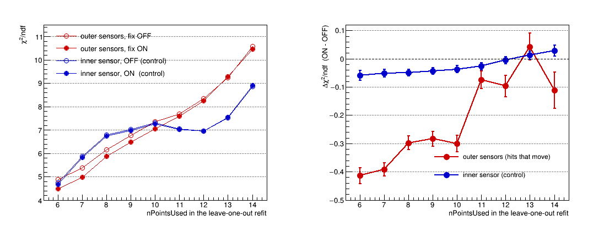
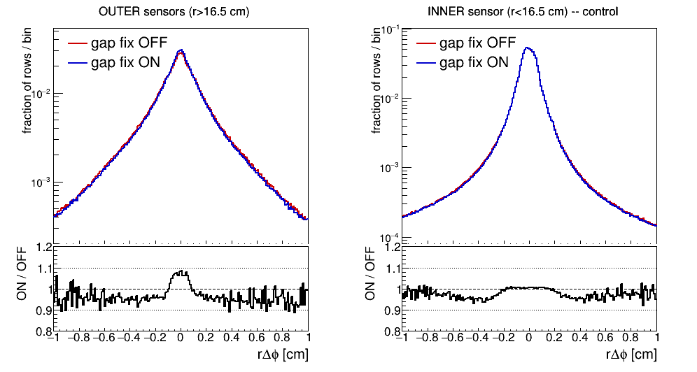

The two outer sensors of every FST wedge are reconstructed 1.000 deg away from where the silicon is — one full kFstStripGapPhi, about 0.39 cm at r=22 cm. Correcting it improves the track fit for exactly those hits by 3.2% in χ²/ndf, and lets 8.5% more of them survive the quality cuts. Original email
StFstHitMaker.cxx lines 159 and 163 add the ±0.5·kFstStripGapPhi term to the two outer sensors with the signs the wrong way round:
L159 sensor == 1: ... - kFstzFilp[disk-1]*kFstzDirct[moduleIdx-1]*0.5*kFstStripGapPhi; -> + L163 sensor == 2: ... + kFstzFilp[disk-1]*kFstzDirct[moduleIdx-1]*0.5*kFstStripGapPhi; -> -
Nothing else changes. Swapping the two signs puts every strip exactly on the AGML silicon.
All 108 FST sensors compared against the AGML silicon, read from each FTUS node's own TGeoTubeSeg shape and global transform in fGeom.root. Disk 1, FSTW copy 1, wedge-local phi (centreline 0, wedge spans ±15 deg):
| strip centres, local phi [deg] | |
|---|---|
| AGML FTUS_1 (outer) | -15.383 … -0.617 |
| AGML FTUS_2 (outer) | +0.617 … +15.383 |
| AGML FTUS_3 (inner) | -14.883 … +14.883 |
| StFstHitMaker, sensor 1 (phiStrip 0-63) | -14.383 … +0.383 off by +1.000 |
| StFstHitMaker, sensor 2 (phiStrip 64-127) | -0.383 … +14.383 off by -1.000 |
| StFstHitMaker, inner | -14.883 … +14.883 exact |
Same ±1.000 deg on all 36 wedges. The inner sensor is exact everywhere, so only the outer pair is affected.
Which sensor owns which strips is not derivable from the code — getSensor() comes from mChannelId (electronics) and getPhiStrip() from mGeoId (geometry), and only Calibrations/fst/fstMapping links them. Read out over all 36864 channels:
sensor 0 (inner): phiStrip 0-127, rStrip 0-3 sensor 1 (outer): phiStrip 0-63, rStrip 4-7 sensor 2 (outer): phiStrip 64-127, rStrip 4-7
The reconstruction is also wrong on its own terms, without reference to AGML: those two spans overlap by 0.77 deg across the wedge centreline, at identical radii (both rStrip 4-7), where kFstStripGapPhi says there is a 1 deg gap. Silicon cannot overlap.
Reconstructed outer-hit azimuth relative to its own wedge centreline, with the correction off and on. No track fit is involved, so nothing can absorb the effect. 152 files of runs 23081008/23081015, ~58M rows.
 |
| outer sensors | overlap |δφ|<0.383° | edge 14.4<|δφ|<15.4° | total |
|---|---|---|---|
| fix OFF | 83,135 (1.67× plateau) | 0 | 1,971,200 |
| fix ON | 0 | 167,426 | 2,118,642 |
With the fix off the two outer sensors pile up on top of each other at the centreline — 1.67× the surrounding density, approaching the 2× expected where two sensors overlap — and the outer edges are empty. With it on the centreline empties completely and the edges populate. The inner sensor is untouched, which is the control.
The narrow spikes are real, not a plotting artefact: they sit at the same local phi in the inner control with and without the fix, so they are fixed features of the detector (a few strips with elevated occupancy, recurring at the same strip number across wedges). They are worth a second look in the outer panel: a single spike near |δφ| = 5° with the fix off becomes two, bracketing it at about 3.8 and 6.3°, with it on. That is a 1 deg shift of the two outer halves in opposite directions acting on a fixed feature — the same signature as the centreline and the edges, seen a third way.
Binning note: one FST strip per bin (30/128 = 0.234375°), rebinned by 4. Bin widths that are not an exact multiple of the strip pitch beat against it and paint periodic spikes that look like structure.
χ²/ndf of the leave-one-out refit, split by whether the removed hit was on an outer or an inner sensor. Only outer hits move, so a real improvement has to concentrate there; inner is the control. Sliced on nPointsUsed so the track composition is fixed and the comparison cannot be a selection effect.
 |
| removed hit | OFF | ON | change | |
|---|---|---|---|---|
| OUTER | 7.5243 ± 0.0080 | 7.2834 ± 0.0075 | -0.241 ± 0.011 | 21.9σ, 3.2% |
| inner (control) | 7.8594 ± 0.0034 | 7.8206 ± 0.0034 | -0.039 ± 0.005 | 8.1σ, 0.49% |
Sample size, off vs on. These are unbiased-residual rows — one per hit removed and refitted — not tracks:
| fix OFF | fix ON | change | |
|---|---|---|---|
| outer-sensor rows | 1,660,288 | 1,800,862 | +8.5% |
| inner-sensor rows | 12,992,281 | 13,097,222 | +0.8% |
| converged refits | 14,652,569 | 14,898,084 | +1.7% |
| all rows in tree | 58,160,090 | 58,775,942 | +1.1% |
The fix costs nothing and lets 8.5% more outer hits pass the quality cuts, while the inner sensor is essentially unchanged — an independent indication it is doing the right thing to the right hits.
Per nPointsUsed slice, Δχ²/ndf = ON - OFF:
| nPts | 6 | 7 | 8 | 9 | 10 | 11 | 12 | 13 | 14 |
|---|---|---|---|---|---|---|---|---|---|
| OUTER | -0.414 | -0.393 | -0.298 | -0.283 | -0.301 | -0.075 | -0.096 | +0.043 | -0.111 |
| inner | -0.059 | -0.052 | -0.050 | -0.044 | -0.037 | -0.026 | -0.005 | +0.013 | +0.029 |
| ratio | 7.0 | 7.6 | 6.0 | 6.4 | 8.1 | — | — | — | — |
χ² is one number; this is the unbiased rΔφ residual itself, normalised to unit area so the comparison is of shape rather than of how many rows survived. Log scale, so the tails are visible.
 |
| region | pass | rows | rms [cm] | core σ [cm] | tail >0.3 cm |
|---|---|---|---|---|---|
| OUTER | OFF | 1,971,200 | 0.2785 | 0.1484 | 29.59% |
| OUTER | ON | 2,118,642 | 0.2720 | 0.1412 | 28.22% |
| inner | OFF | 16,208,524 | 0.1689 | 0.0758 | 18.11% |
| inner | ON | 16,311,760 | 0.1667 | 0.0757 | 17.86% |
The afterburner reads finished hits from MuDst (setFstHitSource(MUDST)) and never runs StFstHitMaker, so fixing that file alone does not change afterburner output. MuDst does keep mMeanRStrip, mMeanPhiStrip and mHardwarePosition, and the correction is a constant shift in phi, so it can be applied at load time on existing files — no DAQ reprocessing:
StFwdHitLoader.cxx, after the FstWedgeAligner block:
if ( mApplyFstGapFix && sensorIndex > 0 ) {
const double sgnAsIs = ( sensorIndex == 1 ) ? -1.0 : +1.0;
vPhi -= sgnAsIs * kFstzFilp[diskIndex] * kFstzDirct[wedgeIndex] * kFstStripGapPhi;
}
Opt-in via setApplyFstGapFix() on StFwdHitLoader/StFwdTrackMaker, and a trailing applyFstGapFix argument on fwd_afterburner_db.C.
Now...I haven't yet thought about automating this flag. I'm sure we will make mistakes setting/not setting mApplyFstGapFix for current mudst vs fixed Mudst if we ever fix StFstHitMaker. This is exactly why I did not make this a commit and PR, but rather putting this in an email. Please think through what we should do. Not fixing StFstHitMaker may be an option...
The problem stated plainly: whether the correction should be applied depends on which production wrote the MuDst, and that is invisible in the file. Set it wrong and you get a 1 deg error either way — uncorrected, or corrected twice. There are three populations to keep straight, and MC is already one of them today:
| MuDst | has the 1° displacement? | correct setting |
|---|---|---|
| real data, current productions | yes | ON |
| real data, after a StFstHitMaker fix | no | OFF |
| MC (StFstFastSimMaker) | no — never applies a gap term at all | OFF |
Suggestion: do not decide it by hand at all — detect it from the data. The signature is not a subtle statistical difference, it is a geometric impossibility, and it is binary:
outer hits with outer hits with
|dphi_local| < 0.383 14.4 < |dphi_local| < 15.4
displaced 83,135 0
correct 0 167,426
With the displacement present the two outer sensors overlap across the wedge centreline, so that band is populated and the outer edges are empty. Corrected, the centreline band is empty because that is the physical 1 deg gap. Zero versus ~105 — a few thousand hits decide it, so the loader can sample the first events of a run and set the flag itself.
The rule that covers all three rows above: apply the correction if and only if the centreline band is populated. Old real data is populated, so it gets corrected. Fixed real data is empty, so it does not. MC is also empty (GEANT puts no hits in the gap, because AGML knows the gap is there), so MC is left alone — which is required, since applying this to MC would introduce an error rather than remove one. One test, no configuration, and the dangerous MC case is safe by construction rather than by remembering.
How many events? Measured on run 23081008, raw MuDst hits (not residual rows — the raw rate is ~30x higher, which is why this is cheap): 96 FST hits/event, 31.75 outer, and
centreline band |dphi_local| < 0.383 deg : 2.027 hits/event outer edge 14.4 < |dphi_local| < 15.4 : 0.000 hits/event
so 10 band hits in 5 events, 50 in 25, 100 in 49. The cold start is a few tens of events, not thousands — and it need not cost any events at all, since this can be a one-time pre-pass over the file's FstHit branch before the event loop rather than something learned from the stream. That also sidesteps the run-condition worry: it is measured per file, on that file.
Or hide a bit instead of measuring. StMuFstHit::mHardwarePosition is a UInt_t carrying values 1-108, so 7 bits used and 25 spare. A high bit could mark the geometry convention, with bit-clear meaning the current one, so every existing file reads correctly without being touched. It is not a schema change — no new member, no I/O layout change — but getDisk(), getWedge() and getSensor() compute straight from mHardwarePosition and would need masking, in both StMuFstHit and StFstHit. Explicit and free at runtime; against it, it only helps files written after the change, so detection is still needed for everything that already exists.
On whether to fix StFstHitMaker at all: leaving it unfixed does avoid the vintage ambiguity, but only for as long as nobody fixes it. It is an obvious two-sign error once written down, so someone eventually will, and at that point every analysis carrying a hard-coded ON silently acquires the error it was correcting. Auto-detection removes the reason to leave it broken, so the recommendation is: fix StFstHitMaker.cxx:159,163 for future productions, and make the load-time correction self-configuring rather than a flag anyone has to remember. A version marker on the hit would be cleaner still, but needs a schema change, and detection works on every file that already exists.
Three workable options then — detect per file, mark a bit, or leave StFstHitMaker alone and always correct — with different trade-offs between robustness, code churn and how badly it fails if someone forgets. Worth agreeing on before this becomes an interface anyone depends on, rather than deciding it here.
{kind=link}
{kind=link}
{kind=link}